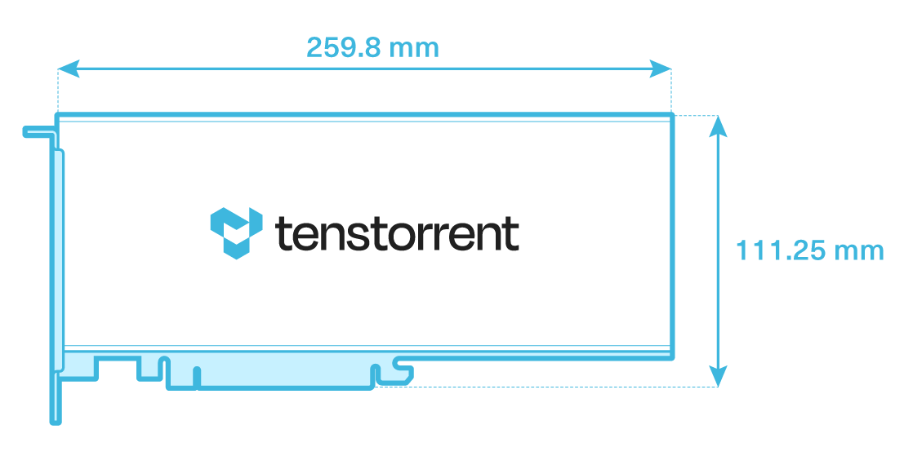

Specifications/Requirements
Grayskull™ Tensix Processor
The Grayskull™ e75 and e150 Tensix Processor add-in boards are built using the Tenstorrent Grayskull™ Tensix Processor:
Tensix Core Count: 120
SRAM: 120 MB (1MB per Tensix Core)
Memory: 8 GB LPDDR4, 256-bit memory bus
e75/e150 Comparison Table
NOTE: The e150 add-in card comes with a heatsink for passive cooling in systems which can provide sufficient forced airflow to the card. If your system does not (for example, a desktop workstation), installing the Active Cooling Kit is required. If the card isn’t sufficiently cooled, performance will be substantially reduced to stay in a safe operating temperature range and you risk damage to the card.
NOTE: Software support for Grayskull has been discontinued. The last supported versions of Tenstorrent’s software for Grayskull are as follows:
TT-System-Firmware:
fw_pack-80.14.0.0.fwbundleTT-KMD:
ttkmd_1.31TT-Metalium:
v0.55
Specification |
e75 |
e150 |
|---|---|---|
Part Number |
TC-01001 |
TC-01002 |
Tensix Cores |
96 |
120 |
AI Clock |
1 GHz |
1.2 GHz |
SRAM |
96 MB |
120 MB |
Memory |
8 GB LPDDR4 |
8 GB LPDDR4 |
Memory Speed |
3.2 GT/sec |
3.7 GT/sec |
Memory Bandwidth |
102 GB/sec |
118 GB/sec |
TeraFLOPS (FP8) |
221 |
332 |
TeraFLOPS (FP16) |
55 |
83 |
TeraFLOPS (BLOCKFP8) |
55 |
83 |
TBP (Total Board Power) |
75W |
200W |
External Power |
1x 6-pin PCIe (required for powering fan) |
1x 6+2-pin PCIe |
System Interface |
PCI Express 4.0 x16 |
PCI Express 4.0 x16 |
Cooling |
Active (blower fan pre-installed) |
Passive (Active Cooling Kit sold separately) |
Dimensions (w/o Cooling Kit) (WxDxH) |
18mm x 167.5mm x 69mm |
36mm x 259.8mm x 111.25mm |
Dimensions (w/ Cooling Kit) (WxDxH) |
18mm x 257mm x 98mm |
36mm x 399mm x 114mm |

e150 without Active Cooling Kit
Data Precision Formats
The e75/e150 support the following data precision formats:
Format |
Bit Depth |
|---|---|
Floating point |
FP8, FP16, BFLOAT16 |
Block floating point |
BLOCKFP2, BLOCKFP4, BLOCKFP8 |
Vector |
VTF19 |
Minimum System Requirements
Part |
Requirement |
|---|---|
CPU |
x86_64 architecture* |
Motherboard |
PCI Express 4.0 x16 slot |
Memory |
64 GB |
Storage |
100 GB (≥2 TB recommended) |
Power Connectors |
PCIe 6-pin (e75) |
Total Board Power |
Up to 75W (e75) / 200W (e150) |
Operating Temperature Range (Die) |
0C - 75C |
Operating System |
Ubuntu version 20.04 (Focal Fossa) ** |
Internet Connection |
Required for driver and stack installation. |
** CPU core count and number of sockets will depend on the amount of host preprocessing and post-processing required before and after the accelerator processing.*
**To check your version, type cat /etc/os-release.
Environment Specifications
The Grayskull™ e75 and e150 Tensix Processor add-in boards are designed to meet these environmental specifications:
Specification |
Requirement |
|---|---|
Operating Temperature Range |
10°C/50°F - 35°C/95°F |
Storage Temperature Range |
-40°C/-40°F - 75°C/167°F |
Elevation |
-5 ft. to 10,000 ft. |
Air Flow (without Active Cooling Kit) |
≥30 CFM @ up to 35°C/95°F |